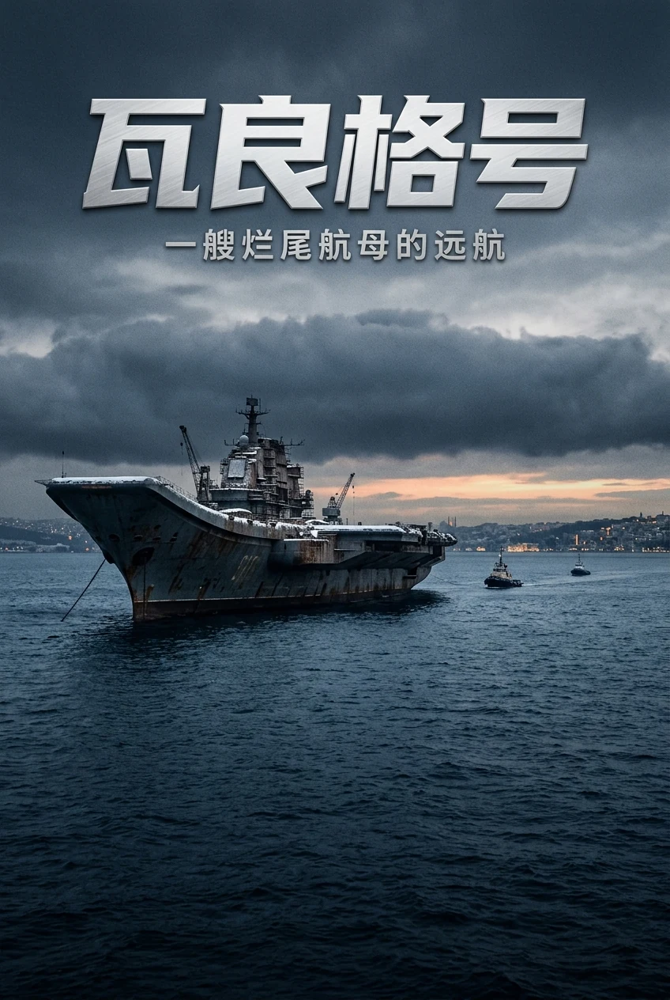
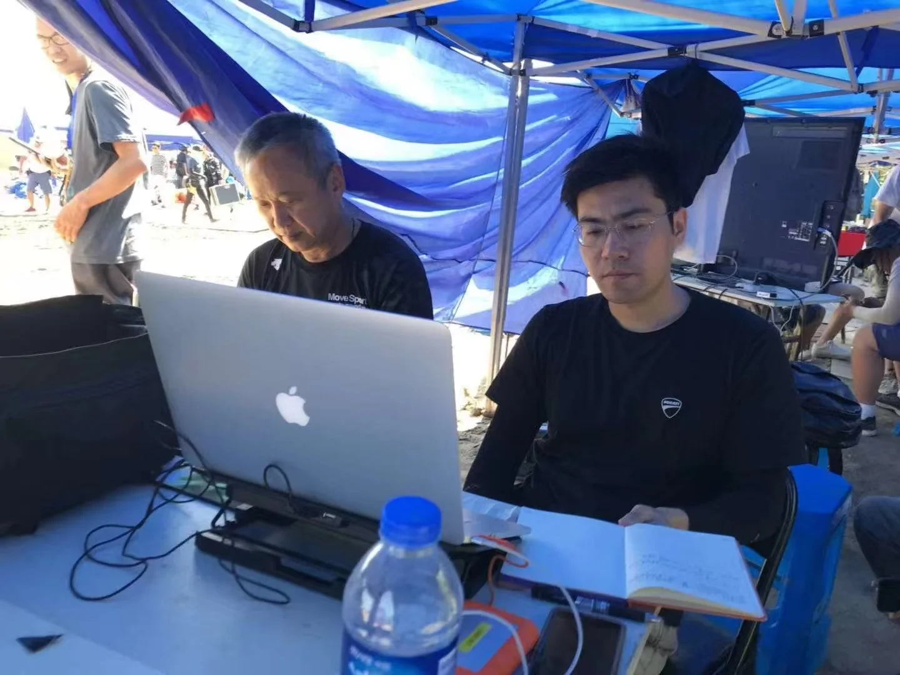
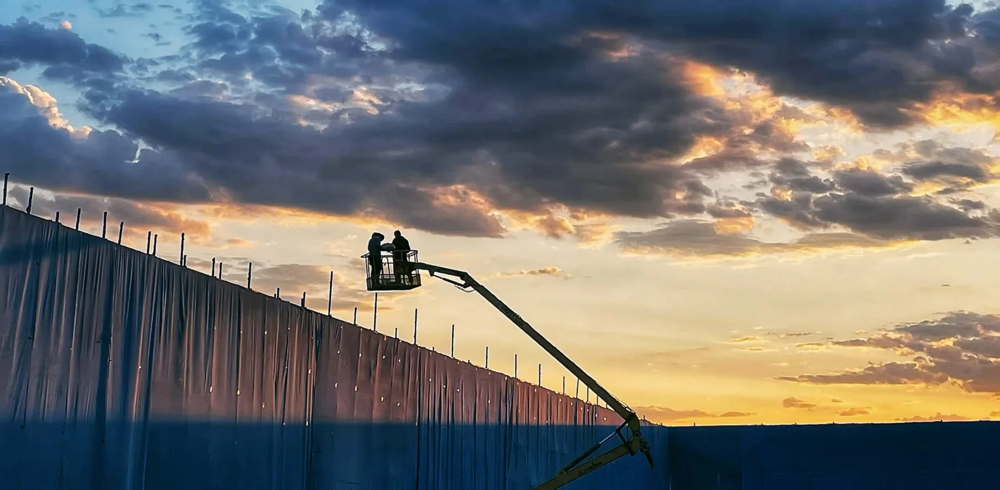
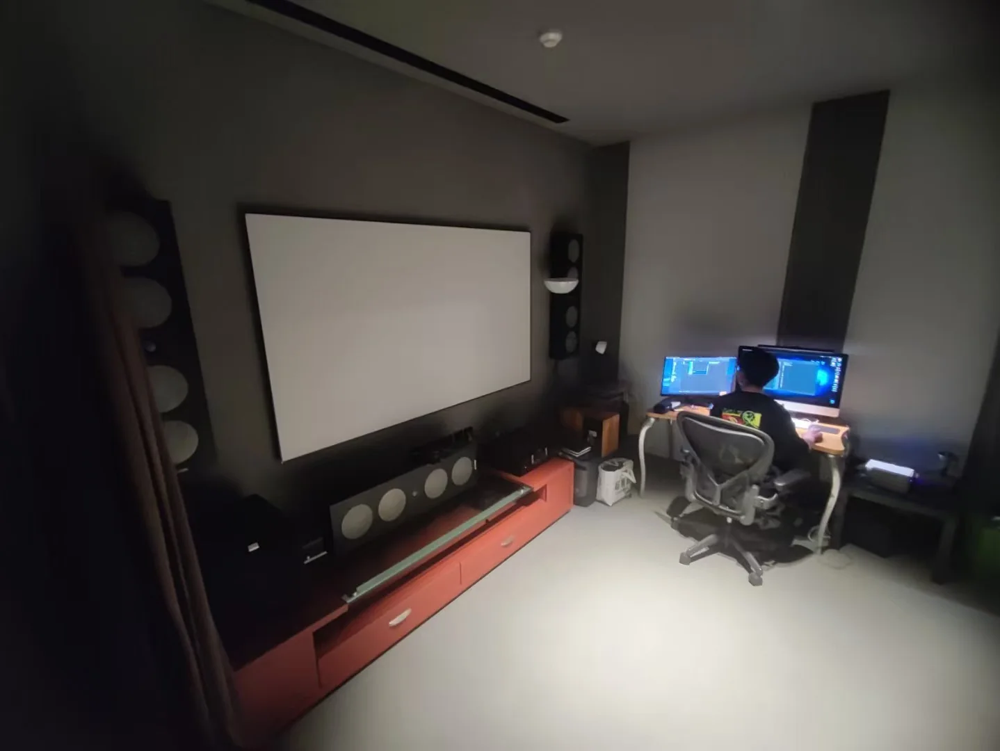
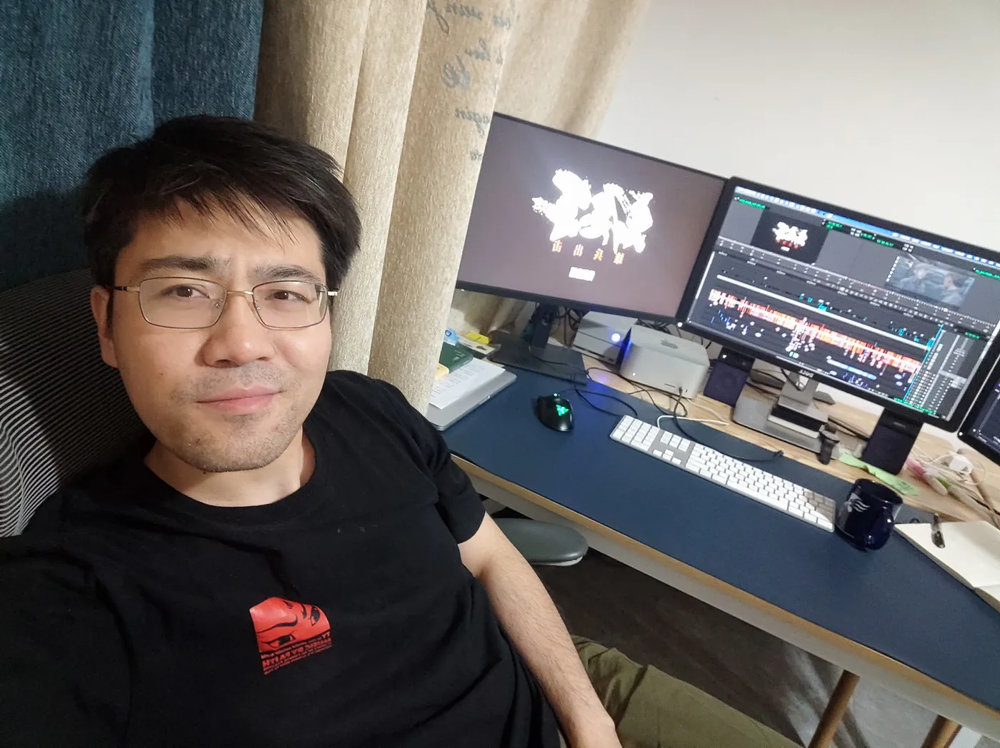
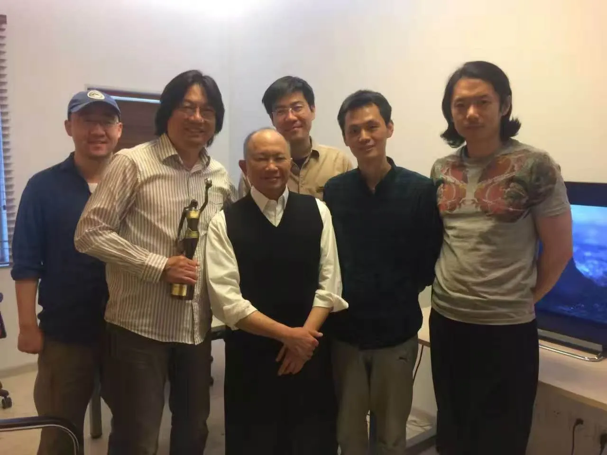
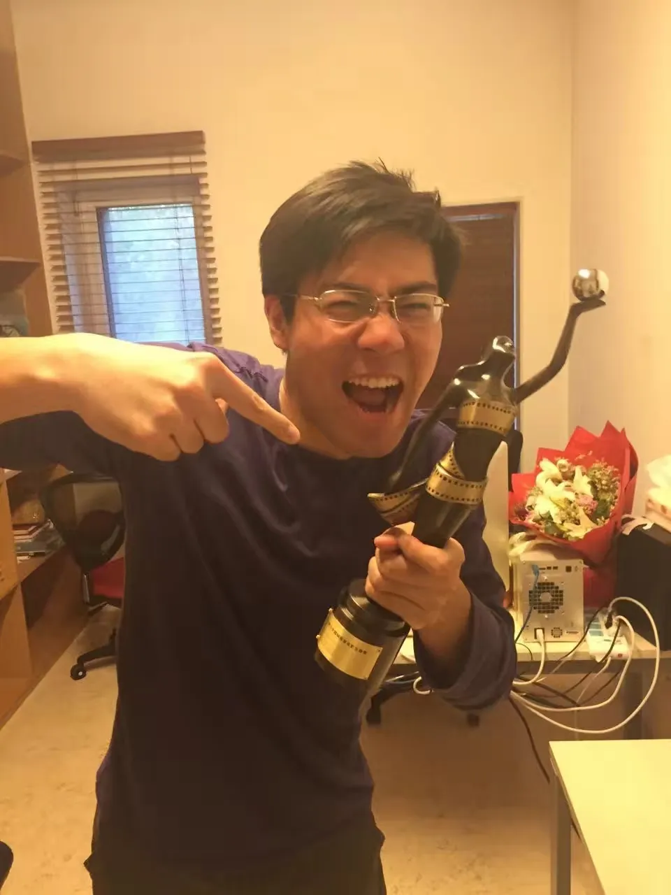
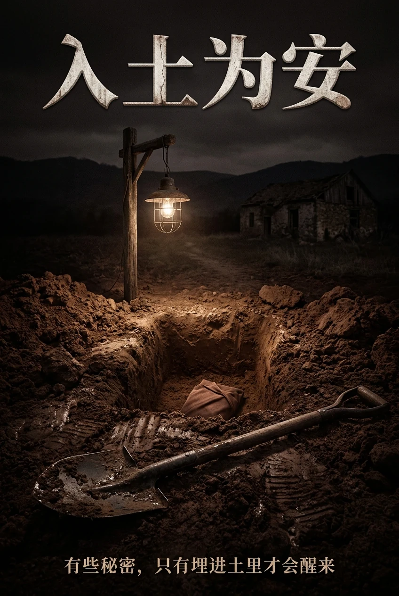

01剧本开发 / IN DEVELOPMENT
瓦良格号
THE VARYAG
原创故事 / 联合编剧 / 导演方向（剧本开发）
苏联解体后，商人徐增平买下一艘无法航行的“烂尾航母”。为把它拖回中国，他必须穿过封锁、债务与国际压力。一次看似荒唐的冒险，最终让“瓦良格号”成为“辽宁舰”，改写亚洲海上格局。
这不是一个单纯的“买船故事”，而是商人、军人、政府和大国之间的多层博弈。
剧本开发中 · 详情可私信
DIRECTOR IN DEVELOPMENT / FILM NARRATIVE
李嘉伟 / LI JIAWEI
导演方向 · 剪辑指导 · 电影叙事
Mastershot Studio 是李嘉伟发起的电影叙事与导演开发工作室。
已开发两个原创电影剧本：《瓦良格号》剧本开发中，《入土为安》已进入创投阶段。
长期参与大型院线电影、战争史诗、动作与情感叙事项目；熟悉现场拍摄、Previz、后期工艺与多团队协作，把复杂素材整理成清晰、有力度、可被观众感知的叙事。
曾与胡大为、邱志伟合作，具备双语沟通及合拍片协作经验。






我关心的是“一个人如何穿过一个巨大的系统”。
《瓦良格号》里，是一个人穿过国家、资本与国际政治的缝隙；
《入土为安》里，是一个人穿过小镇的利益、历史与人心的缝隙。
剪辑教会我先看结构，再看人；
导演要做的，是把结构压到人身上，让选择发生。

THE VARYAG
原创故事 / 联合编剧 / 导演方向（剧本开发）
苏联解体后，商人徐增平买下一艘无法航行的“烂尾航母”。为把它拖回中国，他必须穿过封锁、债务与国际压力。一次看似荒唐的冒险，最终让“瓦良格号”成为“辽宁舰”，改写亚洲海上格局。
这不是一个单纯的“买船故事”，而是商人、军人、政府和大国之间的多层博弈。
剧本开发中 · 详情可私信

ASHES TO EARTH
原创故事 / 编剧 / 导演方向（创投阶段）
梁合山是小镇“杜月笙”。拆迁前夕，张姓绑匪错绑保姆孩子，限梁家十二小时停工。宝藏传言引发全镇挖掘，挖出的却是张家祖产与抗战真相。梁家倒台，村民却为保利益围攻揭露者。
已进入创投阶段 · 详情可私信
DIRECTOR'S EXPERIENCE / 导演组经历
参与剧本开发；《瓦良格号》联合编剧，《入土为安》编剧。参与前期动态预演，与导演、美术、特效指导一起模拟大场面、动作镜头与场景方案；在参与的大特效项目中，均参与动态预览的创意制作，为实拍与后期特效提供参考。
《邪不压正》 开场北京城楼 / 《明日战记》 灾难场景 Previz
在《志愿军》《太平轮》两个项目中，大部分精力负责战争戏；随导演组参与现场拍摄，判断表演、补拍方案与镜头衔接；后期调整表演、重组故事线，完成大场面与动作镜头的叙事衔接。擅长镜头设计。
负责选配乐、找参考音乐；选曲贴片、准确，片方与导演一致好评。选曲判断力，是合作方最常提到的优势之一。
以下为剪辑指导作品；导演项目见 DIRECTING / 导演。
作为大型战争电影项目的一段长期协作经验，参与三部影片不同阶段的现场拍摄、素材组织与后期衔接。
从剧本阶段介入，判断结构、人物与情绪曲线。
跟现场拍摄，判断表演、素材与补拍方向。
在剪辑台上重新组织叙事，必要时重写结构、旁白与表演。
陈凯歌 · 吴宇森 · 周星驰 · 乌尔善 · 李仁港 · 冯小刚 · 陈德森 · 董玮 · 姚婷婷 · 章子怡
中影 · 华谊 · 博纳 · 爱奇艺 · 腾讯 · 宸铭 · 天翔（香港）· Disney Studios
以下为本人参与剪辑项目的合作导演，非本人导演作品。
DIRECTING / EDITORIAL / DEVELOPMENT